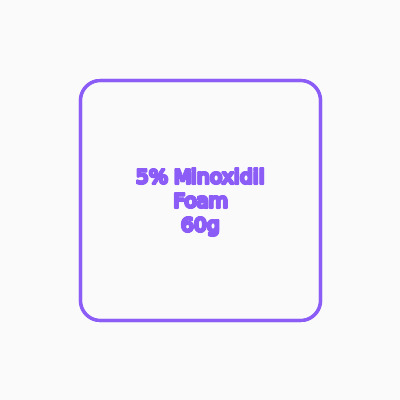

5% Minoxidil Foam
Non-greasy foam formulation for easy application to the scalp.
Key benefits
- 5% minoxidil: Clinically proven to support hair regrowth.
- Foam format: Absorbs quickly without mess.
- Once or twice daily: Flexible application schedule.
How to use
- Ensure scalp is dry. Apply to a clean, dry scalp.
- Part hair. Expose the thinning areas.
- Apply foam. Use half a capful per application.
- Massage in. Gently rub into the scalp.
- Repeat as needed. Once or twice daily.
For external use only. If irritation occurs, discontinue use and consult a healthcare professional.
Common questions
How long does it take to work?
Results vary, but most men see initial changes in 3-6 months with consistent use.
Can I use it with shampoo?
Apply after shampooing when scalp is dry. Avoid washing hair for 4 hours after application.